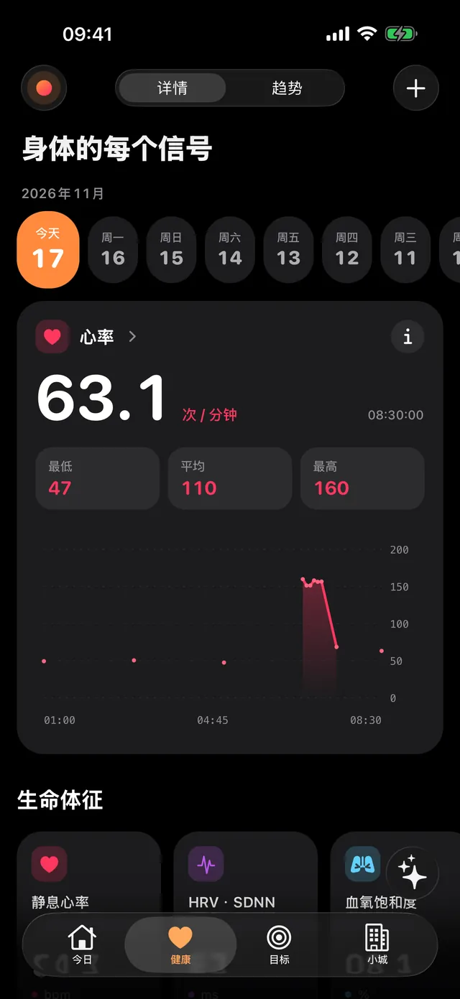

开发者的话
我为什么做 Ippo Care
Yusen WangIppo Care 开发者
曾经，我严重超重，体重拖垮了我的健康。我不好意思走进健身房，也不知道该从哪里开始。
后来，是 AI 帮了我。它从不评判我，帮我读懂自己的身体，和我一起制定真正坚持得下去的计划，陪我一小步一小步往前走。就这样，我成功减了重，如今的身体比过去许多年都更健康。
我做 Ippo Care，是希望每一个和当初的我一样不知从何开始的人，也能拥有这份安静的陪伴。愿 AI 让我们更爱自己；愿虚拟的 AI，让真实的我们一天比一天更好。
认真对待你的每一条数据
- 数据留在你的 iPhone 上没有账号，也没有开发者运营的健康数据库。你的记录保存在你的设备上。
- 无广告，无追踪不含广告和分析 SDK，Apple 健康数据绝不出售。
- AI 由你选择助手是可选功能，只使用你自己设置的服务商和密钥。
